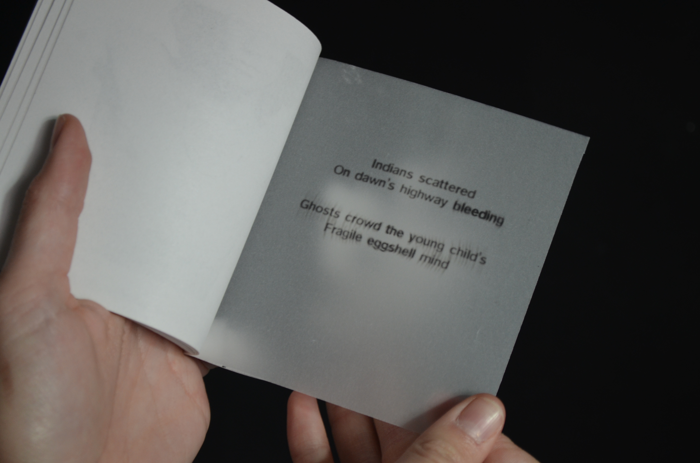
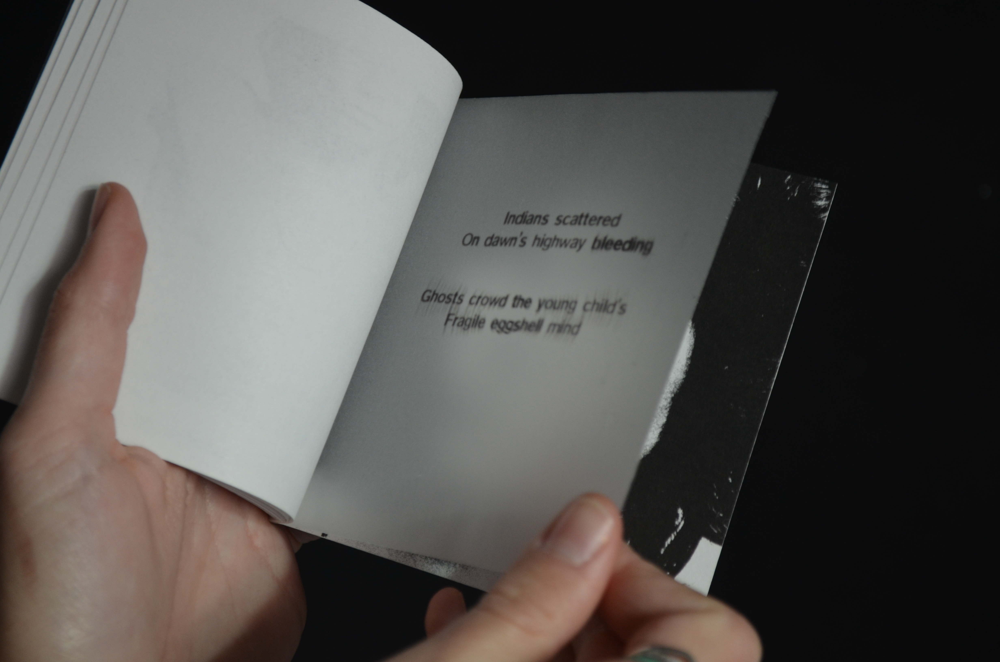
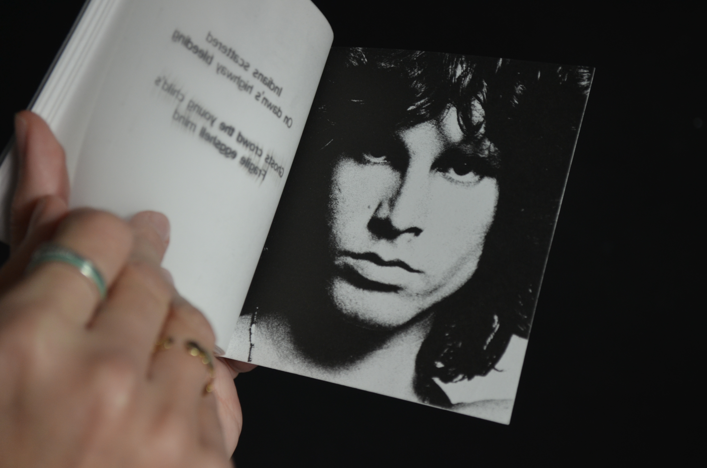
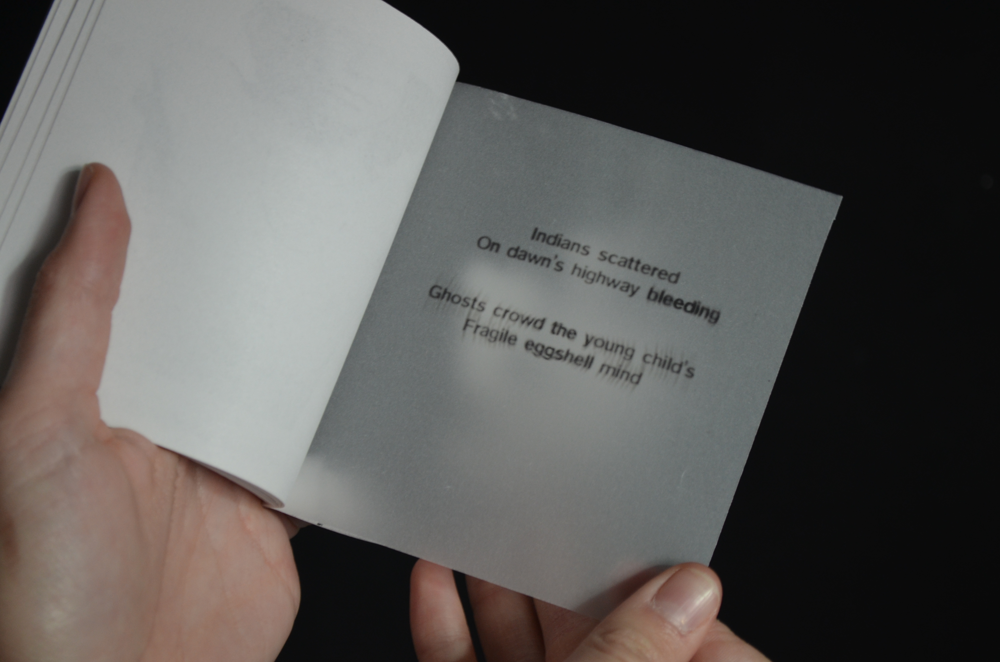
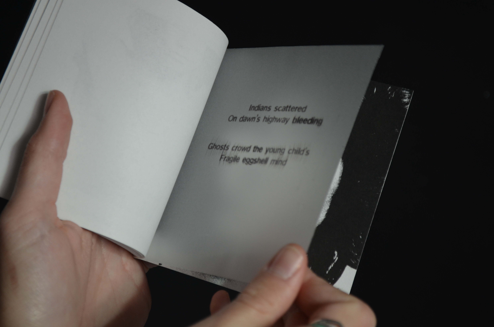
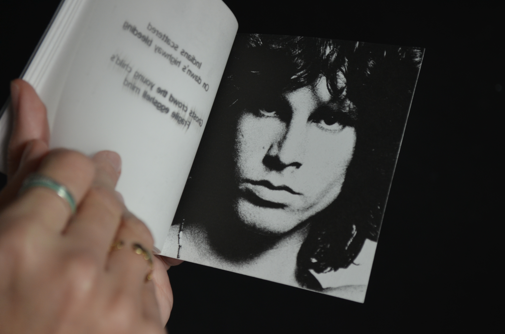

Ghost Song
→ “Through an editorial work, you will reveal something.” For the assignment, I chose to work on Jim Morrison. After his death in 1971, he left behind poems that the remaining members of the band decided to set to music in a tribute album.An American Prayer. I chose the second track of the album, Ghost Song.
 




